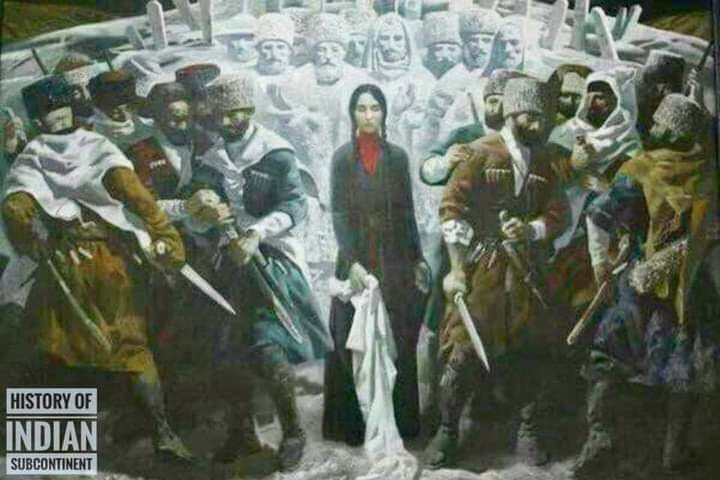

আর এ যুগে আমাদের মতে পর্দা কেবল নারীদের উপর ফরজ; পুরুষের না
২ মার্চ, ২০২১
আর এ যুগে আমাদের মতে পর্দা কেবল নারীদের উপর ফরজ; পুরুষের না।
//এই ছবিতে একজন নারীকে তার মাথার হিজাব খুলে ফেলতে দেখা যাচ্ছে, আরো দেখা যাচ্ছে, দুদিকের পুরুষরা ভিন্ন দিকে মুখ ঘুরিয়ে ফেলেছেন।
আসলে ঘটনাটা কি??
ঘটনাটা দাগেস্তানের। ককেশাস, তুর্কিস্তান ও আফগানিস্তানের বিভিন্ন অঞ্চলের মুসলিম উপজাতিদের মধ্যে একটা প্রথা ছিল। যখন নিজ উপজাইত্র ভেতর দুটো গোত্রে লড়াই বেধে যেত এবং তা অসহনীয় পর্যায়ে পৌছুতো তখন সাধারনত কোন নারী এসে দুদলের মাঝখানে গিয়ে নিজের হিজাব খুলে ফেলতেন।
আধুনিকতা পূর্ব সময়ে মুসলিম পুরুষদের ভেতর সামাজিকভাবে হিজাব, হায়া ও গায়রতের চর্চাটা এমন ছিল যে এভাবে প্রকাশ্যে কোন মেয়ে হিজাব খুলে ফেললে তৎক্ষণাৎ তারা তার দিক থেকে চোখ ফিরিয়ে নিতেন।
এর ফলে অনেক সময় একজন নারী হিজাব খুলে ফেলেছেন বলে পুরুষরা যার যার হায়া রক্ষার্থে যুদ্ধ থামিয়ে দিতে বাধ্য হতেন।
Photo Courtesy: History of Indian Subcontinent
সংগৃহীত
